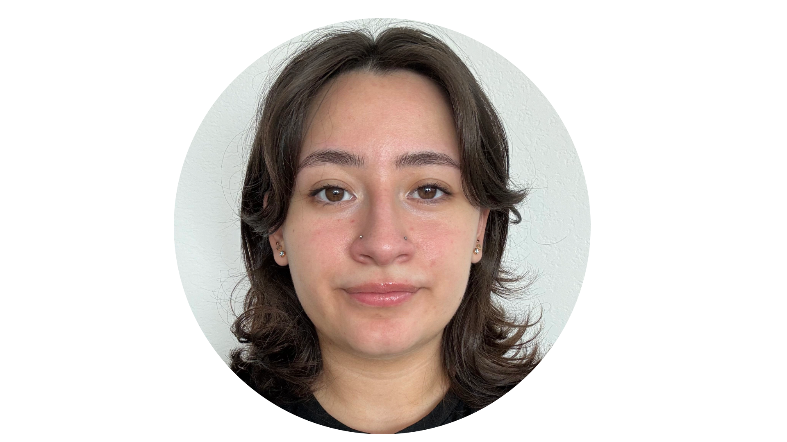

<html></html>
	<head>
		<link href="style.css" rel="stylesheet">
		<title>Micaela Landauro Portfolio (Home)</title>
        <link rel="stylesheet" href="https://cdnjs.cloudflare.com/ajax/libs/font-awesome/5.15.4/css/all.min.css">
	</head>

	<body>
		<header id="header">
			<!-- resume header with your name and title -->
			<h1><b>MICAELA</b> LANDAURO</h1>
			<hr>
			DATA SCIENTIST & ASPIRING ASTROPHYSICIST
			<hr>
		</header>
        <div class="topnav">
            <a class="active" href="#home">Home</a>
            <a href="Projects.html">Projects</a>
          </div>
		<main>
			<article id="mainLeft">
                <section>
                    
                </section>
				<section>
					<h2>CONTACT</h2>
					<!-- contact info including social media -->
                    <p>
                        <i class="fa fa-envelope" aria-hidden="true"></i>
                        <a href="mailto:micaela.landauro@gmail.com">micaela.landauro@gmail.com</a>
                    </p>
                    <p>
                        <i class="fab fa-github" aria-hidden="true"></i>
                        <a href="github.com/mlandauro">mlandauro</a>
                    </p>
                    <p>
                        <i class="fab fa-linkedin" aria-hidden="true"></i>
                        <a href="linkedin.com/micaelalandauro">micaelalandauro</a>
                    </p>
				</section>
                <section>
                    <h2>SKILLS</h2>
                    <b>Technical:</b>
                    <p>Python, Java, C++, Machine Learning, Algorithms, Computational Physics, SQL</p>
                    <b>Professional:</b>
                    <p>Agile, Scrum, Public Speaking, Communication, Leadership, Customer Service, Office Management</p>
                    <b>Languages:</b>
                    <p>English (Fluent/Native)</p>
                    <p>Spanish (Fluent/Native)</p>
                </section>
				<section>
					<h2>EDUCATION</h2>
					<!-- your education -->
                    <b>B.S. Computer Science; Minor Physics</b>
                    <p>
                        The University of Texas at Dallas
                    </p>
                    <p>
                        2020-2024
                    </p>
				</section>            
			</article>
			<article id="mainRight">
				<section>
					<h2>ABOUT</h2>
					<!-- about you -->
					<p>
                        Hi! I'm Micaela Landauro, and I am a recent graduate from UT Dallas (Woosh 👌☄️)! I studied computer science and physics during my time at UTD, and I am excited to work for a company that aligns with my passion for these fields. My dream is to become a computational astrophysicist, and I have focused my education on data science to help achieve that goal. I thrive in environments that challenge me to solve complex problems and leverage data to drive innovation in astrophysics.
                    </p>
				</section>
				<section>
					<h2>RESEARCH EXPERIENCE</h2>
					<!-- your work experience -->
                    <h3><b>UTD Exoplanet Group</b></h3>
                    <p>
                        University of Texas at Dallas | Summer 2023 - Spring 2024
                    </p>
                    <p>Advisor: Dr. Kaloyan Penev</p>
                    <p>
                        Advanced the development of the photometry pipeline database and aided in automating the pipeline by integrating camera configuration files.
                    </p>
                    <ul>
                            <li>Automated the photometry pipeline by refining the Python scripts to read and process camera configuration files, ensuring smooth data ingestion into the database.</li>
                            <li>Presented research at three conferences, sharing results and developments in the pipeline automation.</li>
                    </ul>
                    <h3><b>Theoretical Computational Astrophysics REU</b></h3>
                    <p>
                            University of Texas at Dallas | Summer 2023
                    </p>
                    <p>Advisor: Dr. Kaloyan Penev</p>
                    <p>
                        Contributed to the design and setup of a photometry pipeline database, gaining first-time experience with Python, SQL, and automating data ingestion.
                    </p>
                    <ul>
                            <li>Designed and developed database models and relationships using Python and SQL Alchemy, gaining first-time exposure to both technologies.</li>
                            <li>Created and tested the initial database, setting the foundation for the high-precision photometry pipeline automation architecture.</li>
                            <li>Wrote my first academic research paper summarizing the project and its contributions.</li>
                    </ul>
				</section>
                <section>
                    <h2>TOP PROJECTS</h2>
                    <!-- project drop down things -->
                    <details>
                        <summary>
                          <h3><b>Intrusion Detection System with Machine Learning</b></h3>
                          <span class="icon"> 🔽</span>
                        </summary>
                        <b>(Python, SQL, JavaScript)</b>
                        <p>Augmented an open-source IDS-ML framework by developing a user-friendly web-based
                            interface and backend database integration, enabling users to gather analytics on intrusion
                            detection data and evaluate machine learning algorithm performance.</p>
                      </details>

                      <details>
                        <summary>
                          <h3><b>Photometry Pipeline</b></h3>
                          <span class="icon"> 🔽</span>
                        </summary>
                        <b>(Python, SQL)</b>
                        <p>Automated a photometry pipeline with a relational database that accepts configuration files
                            and triggers corresponding processing steps for robotic telescope images.</p>
                      </details>

                      <details>
                        <summary>
                          <h3><b>Hospital Database</b></h3>
                          <span class="icon"> 🔽</span>
                        </summary>
                        <b>(SQL)</b>
                        <p>Simulated a hospital database to manage patient information, visits, staff, and billing,
                            ensuring streamlined tracking of all facility operations.</p>
                      </details>

                      <details>
                        <summary>
                          <h3><b>Light Curve Plotting of HAT-P-7b</b></h3>
                          <span class="icon"> 🔽</span>
                        </summary>
                        <b>(Python)</b>
                        <p>Created a model for the exoplanet transit dataset (Kepler Archive) using Pytransit for light
                            curve analysis.</p>
                      </details>

                      <details>
                        <summary>
                          <h3><b>Cooking Buddy</b></h3>
                          <span class="icon"> 🔽</span>
                        </summary>
                        <b>(Python, SQL)</b>
                        <p>Developed a platform for college students to share and discover recipes, fostering creativity in
                            the kitchen.</p>
                      </details>
                </section>
			</article>
		</main>
	</body>
</html>